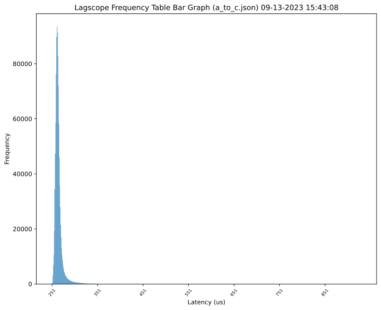
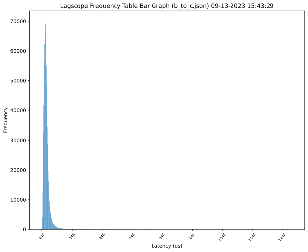

Overview. Some data point on network latencies between VMs
hosted in the same region/AZ vs. VMs hosted in the same region/distinct
AZs. Average latency of single AZ communication is ~3.5x less than that
of communication across distinct AZs. I’ll leave interpretation of
percentiles to the reader. The lagscope tool (under the
default configuration used) collects its data from issuing 1,000,000
pings to the recipient and bases percentiles on that.
| Region | OS | VM SKU | Tools |
|---|---|---|---|
| eu-west-1 | Ubuntu 22.04 | c5.xlarge | lagscope |
> terraform init
> terraform applyUnder the deployment used:
| Private IP | AZ |
|---|---|
10.0.0.122 |
eu-west-1a |
10.0.1.70 |
eu-west-1a |
> lagscope -s10.0.1.70 -P122_to_70.json
lagscope 1.0.1
---------------------------------------------------------
14:59:29 INFO: New connection: local:25001 [socket:3] --> 10.0.1.70:6001
15:00:45 INFO: TEST COMPLETED.
15:00:45 INFO: Ping statistics for 10.0.1.70:
15:00:45 INFO: Number of successful Pings: 1000000
15:00:45 INFO: Minimum = 63.250us, Maximum = 700.000us, Average = 75.364us
15:00:45 INFO: Dumping latency frequency table into json file: 122_to_70.json
Percentile Latency(us)
50% 74
75% 77
90% 81
95% 86
99% 102
99.9% 142
99.99% 207
99.999% 302
> lagscope -s10.0.0.122 -P70_to_122.json
lagscope 1.0.1
---------------------------------------------------------
15:09:09 INFO: New connection: local:25001 [socket:3] --> 10.0.0.122:6001
15:10:26 INFO: TEST COMPLETED.
15:10:26 INFO: Ping statistics for 10.0.0.122:
15:10:26 INFO: Number of successful Pings: 1000000
15:10:26 INFO: Minimum = 64.500us, Maximum = 881.500us, Average = 76.273us
15:10:26 INFO: Dumping latency frequency table into json file: 70_to_122.json
Percentile Latency(us)
50% 74
75% 78
90% 82
95% 87
99% 105
99.9% 156
99.99% 262
99.999% 560Under the deployment used:
| Private IP | AZ |
|---|---|
10.0.0.42 |
eu-west-1a |
10.0.1.193 |
eu-west-1b |
10.0.2.209 |
eu-west-1c |

> lagscope -s10.0.1.193 -Pa_to_b.json
lagscope 1.0.1
---------------------------------------------------------
13:40:19 INFO: New connection: local:25001 [socket:3] --> 10.0.1.193:6001
13:46:46 INFO: TEST COMPLETED.
13:46:46 INFO: Ping statistics for 10.0.1.193:
13:46:46 INFO: Number of successful Pings: 1000000
13:46:46 INFO: Minimum = 372.750us, Maximum = 1126.250us, Average = 386.743us
13:46:46 INFO: Dumping latency frequency table into json file: a_to_b.json
Percentile Latency(us)
50% 384
75% 388
90% 394
95% 403
99% 439
99.9% 528
99.99% 676
99.999% 932
> lagscope -s10.0.2.209 -Pa_to_c.json
lagscope 1.0.1
---------------------------------------------------------
13:48:09 INFO: New connection: local:25001 [socket:3] --> 10.0.2.209:6001
13:52:35 INFO: TEST COMPLETED.
13:52:35 INFO: Ping statistics for 10.0.2.209:
13:52:35 INFO: Number of successful Pings: 1000000
13:52:35 INFO: Minimum = 251.250us, Maximum = 930.250us, Average = 265.586us
13:52:35 INFO: Dumping latency frequency table into json file: a_to_c.json
Percentile Latency(us)
50% 263
75% 267
90% 272
95% 279
99% 311
99.9% 380
99.99% 450
99.999% 584
> lagscope -s10.0.0.42 -Pb_to_a.json
lagscope 1.0.1
---------------------------------------------------------
13:59:38 INFO: New connection: local:25001 [socket:3] --> 10.0.0.42:6001
14:06:09 INFO: TEST COMPLETED.
14:06:09 INFO: Ping statistics for 10.0.0.42:
14:06:09 INFO: Number of successful Pings: 1000000
14:06:09 INFO: Minimum = 373.750us, Maximum = 1110.000us, Average = 389.622us
14:06:09 INFO: Dumping latency frequency table into json file: b_to_a.json
Percentile Latency(us)
50% 386
75% 390
90% 398
95% 408
99% 448
99.9% 538
99.99% 671
99.999% 858
> lagscope -s10.0.2.209 -Pb_to_c.json
lagscope 1.0.1
---------------------------------------------------------
14:09:36 INFO: New connection: local:25001 [socket:3] --> 10.0.2.209:6001
14:17:18 INFO: TEST COMPLETED.
14:17:18 INFO: Ping statistics for 10.0.2.209:
14:17:18 INFO: Number of successful Pings: 1000000
14:17:18 INFO: Minimum = 446.000us, Maximum = 1278.250us, Average = 461.115us
14:17:18 INFO: Dumping latency frequency table into json file: b_to_c.json
Percentile Latency(us)
50% 459
75% 463
90% 469
95% 476
99% 504
99.9% 584
99.99% 702
99.999% 931
> lagscope -s10.0.0.42 -Pc_to_a.json
lagscope 1.0.1
---------------------------------------------------------
14:21:48 INFO: New connection: local:25001 [socket:3] --> 10.0.0.42:6001
14:26:14 INFO: TEST COMPLETED.
14:26:14 INFO: Ping statistics for 10.0.0.42:
14:26:14 INFO: Number of successful Pings: 1000000
14:26:14 INFO: Minimum = 250.500us, Maximum = 1113.250us, Average = 265.769us
14:26:14 INFO: Dumping latency frequency table into json file: c_to_a.json
Percentile Latency(us)
50% 263
75% 267
90% 273
95% 281
99% 309
99.9% 375
99.99% 485
99.999% 870
> lagscope -s10.0.1.193 -Pc_to_b.json
lagscope 1.0.1
---------------------------------------------------------
14:27:41 INFO: New connection: local:25001 [socket:3] --> 10.0.1.193:6001
14:35:24 INFO: TEST COMPLETED.
14:35:24 INFO: Ping statistics for 10.0.1.193:
14:35:24 INFO: Number of successful Pings: 1000000
14:35:24 INFO: Minimum = 447.000us, Maximum = 1433.500us, Average = 461.813us
14:35:24 INFO: Dumping latency frequency table into json file: c_to_b.json
Percentile Latency(us)
50% 459
75% 464
90% 471
95% 478
99% 505
99.9% 586
99.99% 721
99.999% 933